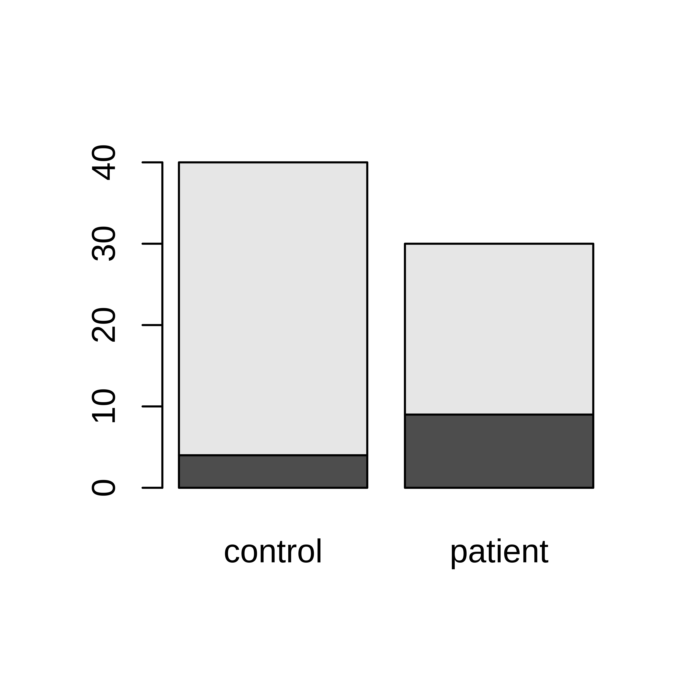
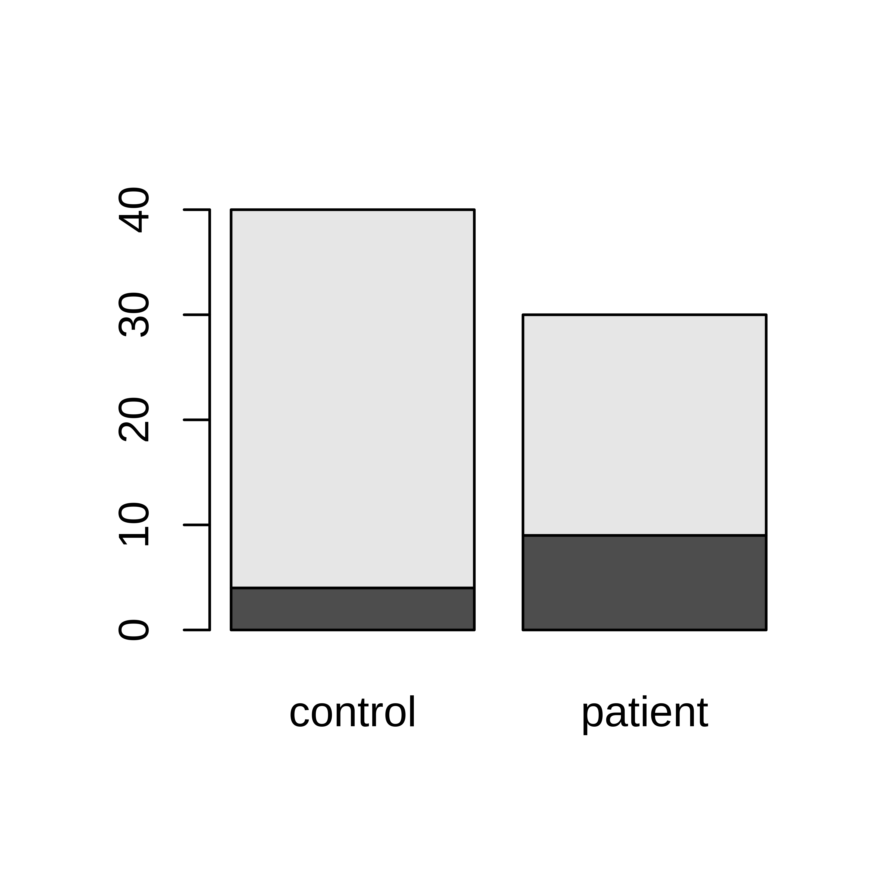
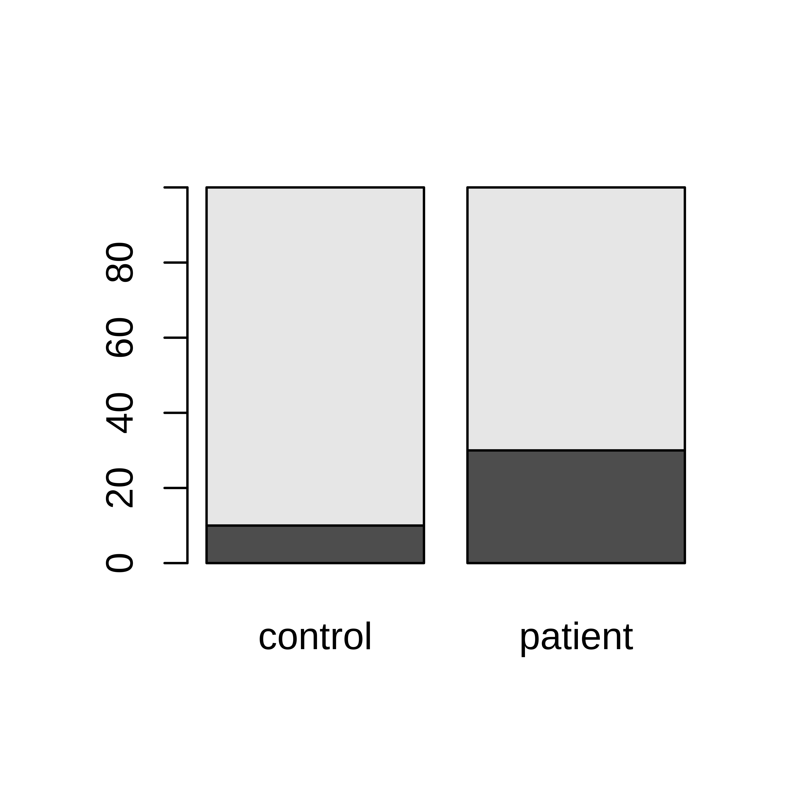
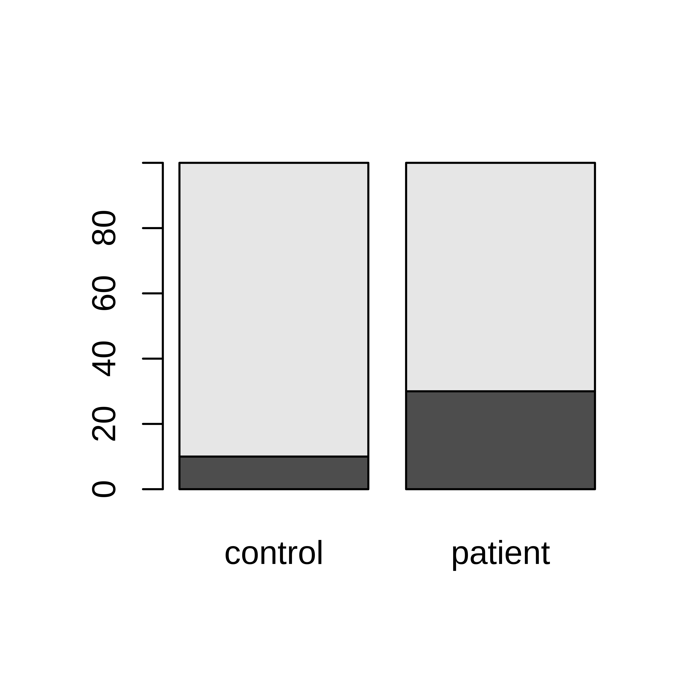
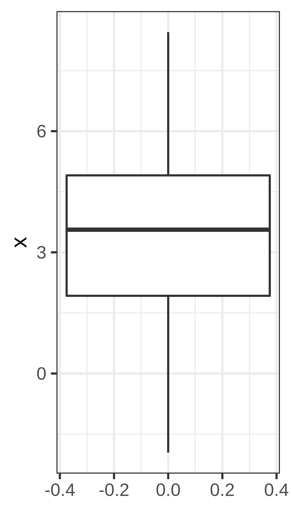
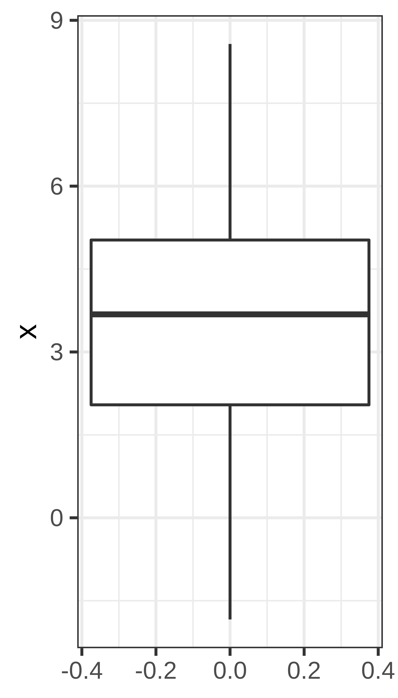

Chapter 2 Descriptive statistics
Learning outcomes:
- be aware of data types
- compute measures of location, including mean and median
- compute measures of spread, including quantiles, variance and standard deviation
- understand the concept random sample
- compute population mean and variance
- compute sample mean and variance
2.1 Data types
Data can be divided into different types; categorical and quantitative (numeric). How to summarize and analyze your data depends on the type.
Categorical data types are divided into;
- Nominal: named. Ex: dead/alive, healthy/sick, WT/mutant, AA/Aa/aa, male/female, red/green/blue
- Ordinal: named and ordered. Ex: pain (weak, moderate, severe), AA/Aa/aa, very young/young/middle age/old/very old, grade I, II, III, IV
Quantitative data types are divided into;
- Discrete: finite or countable infinite values. Ex. counts, number of cells, number of reads
- Continuous: infinitely many uncountable values. Ex. height, weight, concentration
2.2 Categorical data
2.2.1 Data summarization and plots
Categorical data can be summarized by counting the number of observations of each category and summarizing in a frequency table or bar plot. Alternatively, the proportions (or percentages) of each category can be calculated.
Example 2.1 Ten lab mice
Observe gender and weight of your ten lab mice and summarize.If you want to follow this example, you can download the data here; mice.csv. You get the subset used in this example by the following commands;
## first read the full data set into R
mice <- read.csv("mice.csv")## Then extract the specific subset used in this example
m10 <- subset(mice, subset=week==5 & id %in% 1:10, select = c(id, gender, weight))In this example we have only ten observations (mice) and the full data can actually be shown in a table.
| id | gender | weight | |
|---|---|---|---|
| 1 | 1 | male | 19 |
| 21 | 2 | male | 21 |
| 41 | 3 | female | 18 |
| 61 | 4 | male | 20 |
| 81 | 5 | male | 21 |
| 101 | 6 | male | 17 |
| 121 | 7 | female | 18 |
| 141 | 8 | male | 24 |
| 161 | 9 | male | 22 |
| 181 | 10 | female | 18 |
We are interested in the gender distribution in our group of mice. Count the frequency of male/female mice and summarize in a table. Also, the fraction or percentage can be useful.
| gender | n | percent (%) |
|---|---|---|
| female | 3 | 30 |
| male | 7 | 70 |
The frequencies can also be shown in a barplot.
ggplot(m10, aes(x=gender)) + geom_bar()
barplot(table(m10$gender))Figure 2.1: The number of male and female mice shown in barplots generated using ggplot and basic R graphics.
patients: {L, L, L, R, L, R, R, L, L, R, R, R, R, R, L, R, R, R, R, R, R, R, R, R, R, L, L, R, R, R}
controls: {R, L, R, R, L, R, R, R, R, R, R, R, R, R, R, R, R, R, R, R, R, R, L, R, R, L, R, R, R, R, R, R, R, R, R, R, R, R, R, R}
Summarized as
| group | Total n | Left handed (%) |
|---|---|---|
| control | 40 | 4 (10%) |
| patient | 30 | 9 (30%) |
or in a contingency table;
| L | R | Sum | |
|---|---|---|---|
| control | 4 | 36 | 40 |
| patient | 9 | 21 | 30 |
| Sum | 13 | 57 | 70 |
Data can be summarized in barplots in several ways;
## Using ggplot to create barplots
ggplot(hand, aes(x=group, fill=handedness)) + geom_bar()
ggplot(hand, aes(x=group, fill=handedness)) + geom_bar(position="dodge")
ggplot(hand, aes(x=group, fill=handedness)) + geom_bar(position="fill") + ylab("Fraction")
## Using basic R graphics to create barplots
tab <- table(hand$handedness, hand$group)
barplot(tab)
barplot(tab, beside=TRUE)
tabperc <- tab
tabperc[,1] <- 100*tab[,1]/sum(tab[,1])
tabperc[,2] <- 100*tab[,2]/sum(tab[,2])
barplot(tabperc) 
 

Figure 2.2: Left-handedness in patient and control groups.
2.3 Quantitative data
Quantitative data (both discrete and continuous) can be visualized in a histogram;
Figure 2.3: Throw 10 dice and count the total number of dots. Repeat the experiment 1000 times. This histogram summarize the results, i.e. the total number of dots when throwing 10 dice.
or a density plot;
Figure 2.4: Density plot over the total number of dots when throwing 10 dice.
Figure 2.5: Histogram over weight of 2000 5 weeks old mice, colored according to gender.
Summary statistics for numeric data are usually divided into measures of location and spread.
2.4 Measures of location
- Mode: the most common value, can be computed also for categorical data
- Median: The value that divide the ordered data values into two equally sized groups. 50% of the values are below the median.

- Mean: the arithmetic mean, also called the average
For \(n\) onservations \(x_1, x_2, \dots, x_n\), the mean value is calculated as;
\[\bar x = \frac{x_1+x_2+\dots+x_n}{n} = \frac{1}{n}\displaystyle\sum_{i=1}^n x_i\] Note, several very different distributions can still have the same mean value.
Figure 2.6: All these distributions have the same mean value, 3.50.
2.5 Measures of spread
Quartiles - the three values that divide the data values into four equally sized groups.
- Q1. First quartile. 25% of the values are below Q1. Divides the values below the median into equally sized groups.
- Q2.´ Second quartile. 50% of the values are below Q2. Q2 is the median.
- Q3. Third quartile. 75% of the values are below Q3. Divides the values above the median into equally sized groups.

- IQR: interquartile range: Q3 - Q1
- Variance, \(\sigma^2\). The variance is the mean squared distance from the mean value.
- Standard deviation, \(\sigma = \sqrt{\sigma^2}\).
2.5.1 Variance and standard deviation
The variance of a set of observations is their mean squared distance from the mean value;
\[\sigma^2 = \frac{1}{n} \sum_{i=1}^n (x_i - \bar x)^2.\] the variance is measured in the square of the unit in which \(x\) was measured. a commonly used measured on the same unit as \(x\) is the standard deviation, defined as the square root of the variance;
\[\sigma = \sqrt{\frac{1}{n} \sum_{i=1}^n (x_i - \bar x)^2}\] The denominator \(n\) is commonly replaced by \(n-1\) and the sample standard deviation is calculated instead;
\[s = \sqrt{\frac{1}{n-1} \sum_{i=1}^n (x_i - \bar x)^2}.\] The latter formula is used if we regard the collection of observations \(x_1, \dots, x_n\) as a sample drawn from a large population of possible observations.
I we want to describe the variance/standard deviation only of our set of observations, the former formula should be used, calculation of a population standard deviation \(\sigma\) (i.e. we consider the set of observations to be the full population).
If instead, we want to estimate the variance of a larger population from which our smaller sample is drawn, we should calculate the sample standard deviation, \(s\).
Exercises: Descriptive statistics
Exercise 2.1 Data summary
Consider the below data and summarize each of the variables. There is no need to use R here, just use pen and paper, maybe use R as a calculator.
| id | smoker | baby weight (kg) | gender | mother weight (kg) | mother age | parity | married |
|---|---|---|---|---|---|---|---|
| 1 | yes | 2.8 | F | 64 | 21 | 2 | yes |
| 2 | yes | 3.2 | M | 65 | 27 | 1 | yes |
| 3 | yes | 3.5 | F | 60 | 31 | 2 | yes |
| 4 | yes | 2.7 | F | 73 | 32 | 0 | yes |
| 5 | yes | 3.3 | M | 59 | 39 | 3 | yes |
| 6 | no | 3.7 | F | 62 | 26 | 0 | no |
| 7 | no | 3.3 | F | 52 | 27 | 2 | no |
| 8 | no | 4.3 | F | 59 | 21 | 0 | no |
| 9 | no | 3.2 | M | 65 | 28 | 1 | no |
| 10 | no | 3.0 | M | 81 | 33 | 4 | yes |
Exercise 2.2 Exercise in distribution of sample mean
The total cholesterol in population (mg/dL) is normally distributed with \(\mu = 202\) and \(\sigma = 40\).
- How is the sample mean of a sample of 4 persons distributed?
- What is the probability to see a sample mean of 260 mg/dL or higher?
- Is there reason to believe that the four persons with mean 260 mg/dL were sampled from another population with higher population mean?
Exercise 2.3 Amount of active substance
The amount of active substance in a pill is stated by the manufacturer to be normally distributed with mean 12 mg and standard deviation 0.5 mg. You take a sample of five pill and measure the amount of active substance to; 13.0, 12.3, 12.6, 12.5, 12.7 mg.
- Compute the sample mean
- Compute the sample variance
- Compute the sample standard deviation
- compute the standard error of mean, \(SEM\).
- [Save this question to the probability session] If the manufacturers claim is correct, what is the probability to see a sample mean as high as in a) or higher?
Solutions: Descriptive statistics
?? Smokers: 5 (50%) yes baby weight (kg) mean (sd): 3.3 (0.44) gender: 6 (60%) F mother weight (kg) mean(sd): 64 (8.5) mother age mean(sd): 28.5 (5.8) partity mean(sd): 1.5 (1.4) could also be handled as categorical (ordinal) and report frequencies and percentages. married: 4 (40%) yes
Did you caompute standard deviations that were aslightly different? Then you probably computed the sample standard deviation, which could actually be what you want to report. When do you want to compute sample standard deviation?
- \[\bar X = \frac{1}{4}\sum_{i=1}^4 X_i \\ X_i \sim N(\mu, \sigma) \\ \bar X \sim N\left(\mu, \frac{\sigma}{\sqrt{n}}\right) = N(202, 20) \]
- 0.0019
- 12.62
- 0.067
- 0.26
- 0.22
- 0.0028